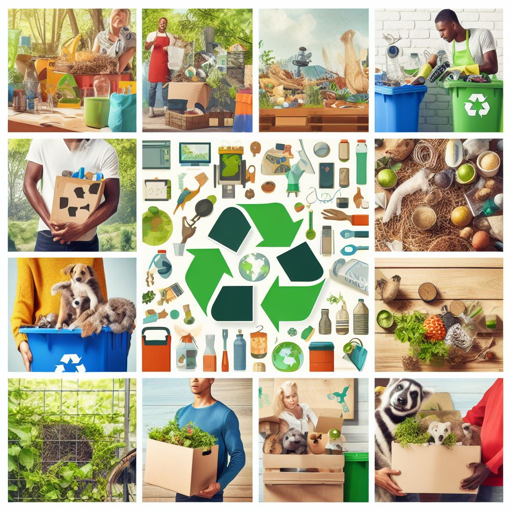
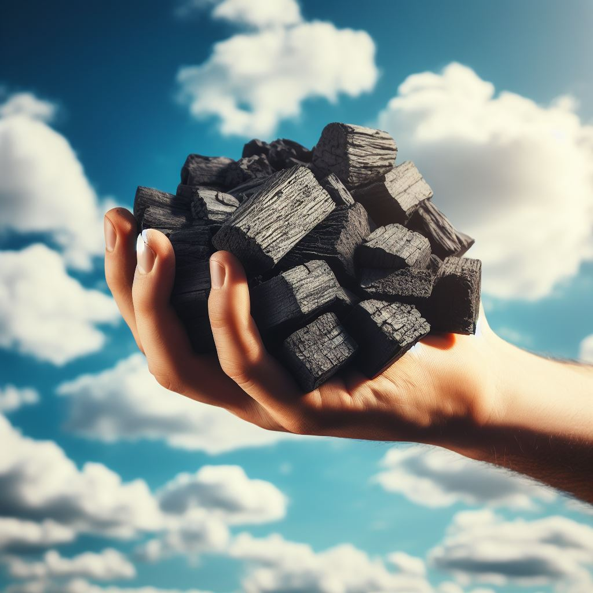

Sustainable and Affordable alternatives to wood charcoal and firewood.
Wood charcoal and firewood are a main source of energy for a greater percentage of most homes. In fact, the United Nations estimates that more than 950 million people rely on wood and charcoal for cooking in Sub-Saharan Africa alone; that number will rise to 1.67 billion by 2050. They are mainly preferred as they are easily available in the market and cheaper compared to electricity or gas further to note acquiring the technologies to use them is expensive, whereas the later the technologies that support their consumption are highly accessible; indeed, firewood can be consumed without stoves, because basically materials such as stones are sufficient to balance the cooking utensils, especially in rural areas. The enduring appeal of charcoal, and its positive association with the flavor of food, continues to make it a popular choice for cooking in households.
In this project we aim to bring to light more efficient ways of energy such as compost briquettes which are much cheaper, have low carbon emissions ,do not require cutting down of trees and can be obtained anywhere and everywhere since basically you just have to get household waste, fallen tree leaves, agricultural waste.
More benefits that arise from briquettes are a cleaner environment as waste from households goes into better use. Creating safer jobs to the men involved in cutting of trees and burning charcoal which is sometimes done illegally. Reducing forest fires that occur due to burning of charcoal which cause great damage that takes years to reverse. Inclusion of community in safer energy sources by collecting household and agricultural waste. Cost saving as briquettes are made on uniform sizes and therefore makes it easy to count on how many one can use per combustion or per cook thus minimizing wastage.
 